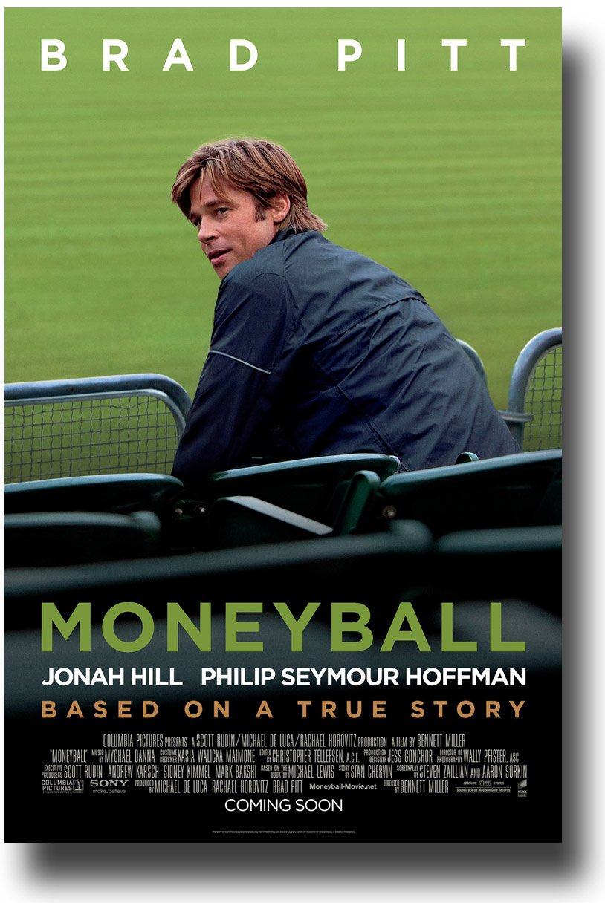

Moj ulubiony artysta to Mike Shinoda
Mój ulubiony wykonawca muzyczny to Sting. Sting naprawdę nazywa się Gordon Matthew Sumner i urodził się w 1951 roku w Newcastle. Dorastał w zwyczajnej, angielskiej rodzinie, która utrzymywała się z fizycznej pracy obojga rodziców. Jego ojciec był inżynierem, choć pracował jako mleczarz, a matka fryzjerką. Gordon dorastał z młodszym rodzeństwem - bratem Philipem i dwoma siostrami Angelą oraz Anitą.
Mój ulubiony film to Moneyball

Moje ulubione książki to: